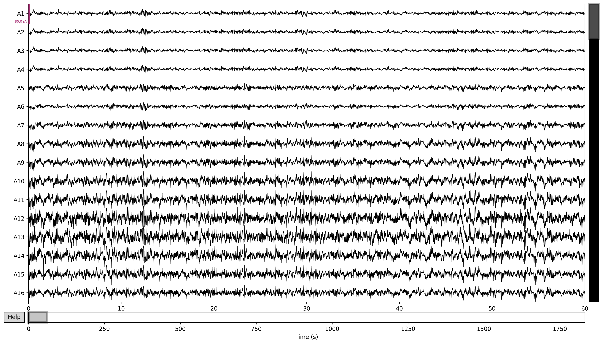

I'm working on a new project related to visualizing EEG data. I'm doing this to gain some familiarity with recorded brain data and how to manipulate / handle it with code. That way when I get to start working with Synthetic Biological Neural Networks (see: an-introduction-to-organic-neural-networks, I'll know how to manage the data.
I'm starting out with an open-source EEG dataset on Inner Speech that I found with OpenNeuro. I'm also using the MNE python library. For my first script, I downloaded a file from the dataset and opened it with mne.
import mne
raw = mne.io.read_raw_bdf(r'data.bdf', preload=True)
If I just immediately plot this raw data, the output looks something like this:
raw.plot(duration=60, n_channels=16, block=True, picks='eeg')

I was very happy to see something on the graph as oppose to nothing. I got a recommendation to then try applying some filtering to my data. Mainly, low and high pass filters.
I found this article, "The effects of applying filters on EEG signals for classifying developers’ code comprehension" which mentions low-pass filters. The article reads: "the filter used frequencies below 1Hz and greater than 40Hz to attenuate signals." I interpreted this as meaning that all frequencies under 1Hz are discarded, and all frequencies above 40Hz are discarded. The text seems to read in the opposite way, but these values only work in this orientation.
raw = mne.io.read_raw_bdf(r'data.bdf', preload=True)
raw_filtered = raw.copy()
raw_filtered.filter(
l_freq=1,
h_freq=40,
)
Then if I plot it with the same line as before:
raw_filtered.plot(duration=60, n_channels=16, block=True, picks='eeg')
Then the resulting graph feels much more legible, even if I still haven't done anything to interpret it.
